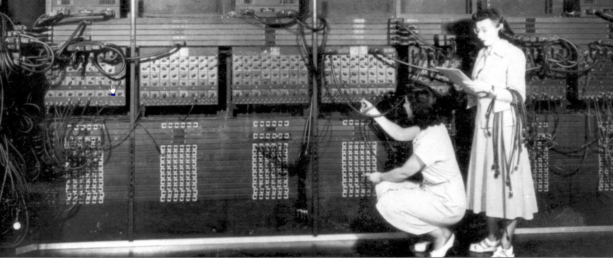
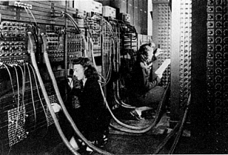
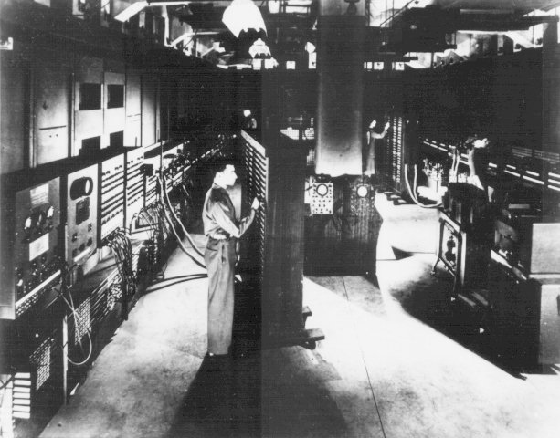
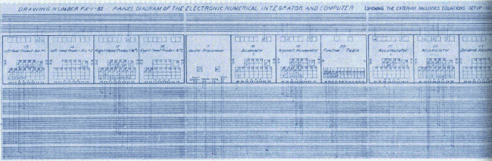
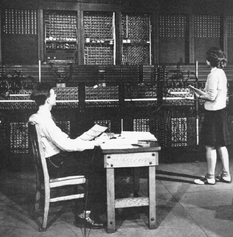

Frank da CruzENIAC was the first programmable, electronic, general-purpose digital computer (but — at least at first — it was not a stored-program computer). Columbia's connection to the ENIAC is tenuous at best (some discussion below), but no history of computing is complete without it! When it first became operational in 1945, it was programmed entirely by women... "directly" by plugging in cables and flipping switches; programming languages would not come until years later.
January 2011
Most recent update: Mon Sep 25 07:06:39 2023


Built in 1943-45 at the Moore School of the University of Pennsylvania for the War effort by John Mauchly and J. Presper Eckert (no relation to Columbia University's Wallace Eckert) but not delivered to the Army until just after the end of the war, the Electronic Numerical Integrator And Computer (ENIAC) was the first general-purpose electronic digital computer. It was 150 feet wide with 20 banks of flashing lights and about 300 times faster than the Mark 1 at addition. Wallace Eckert is cited in some of the histories as an influence on the designers, as he was for the Mark 1.
The ENIAC was not a stored-program computer; it is "better described as a collection of electronic adding machines and other arithmetic units, which were originally controlled by a web of large electrical cables" (David Alan Grier, IEEE Annals of the History of Computing, Jul-Sep 2004, p.2). It was programmed by a combination of plugboard wiring (shown at the top) and three "portable function tables", shown at left (CLICK HERE and HERE for better views). Each function table has 1200 ten-way switches, used for entering tables of numbers. Note the IBM punches on the far right — a bit hard to make out; better visible in this clearer but less atmospheric copy of the same photo. Franz Alt writes in Archaeology of Computers — Reminiscences, 1945-47, Communications of the ACM, July 1972:
One of the peculiarities that distinguished ENIAC from all later computers was the way in which instructions were set up on the machine. It was similar to the plugboards of small punched-card machines, but here we had about 40 plugboards, each several feet in size. A number of wires had to be plugged for each single instruction of a problem, thousands of them each time a problem was to begin a run; and this took several days to do and many more days to check out. When that was finally accomplished, we would run the problem as long as possible, i.e. as long as we had input data, before changing over to another problem. Typically, changeovers occurred only once every few weeks.
|
 |
| Image: [103]: ENIAC programming chart representing the wiring to set up an exterior ballistics equation; CLICK to enlarge. |
Later, ENIAC's plugboards were permanently "microprogrammed" with a repertoire of 50-100 commonly used instructions that could be referenced from a "user program" entered as a sequence of instructions into the function-table switches. [40]
Herb Grosch says of this page [personal correspondence, 10 May 2003]:
I was roaming around the links and sublinks in the ENIAC story, and note with much interest that there were three or four castered twiddle boards [portable function tables A, B, and C], where I had always assumed only one.I note the almost complete absence of Col.[then Major] Simon, and of Dick Clippinger, who should share with von Neumann the credit for moving from plugging to twiddling for program insertion.
I was pleased to see short reference to the IBM I/O units, which show in your and other copies of the most famous photo. I wonder if John McPherson knows how they were sold/rented/given to the Moore School — never thought to ask him at the time. Unusual.
Bashe [4] says, "When the Army requested special card reading and punching units for an undisclosed project underway at the University of Pennsylvania, [IBM Chief Engineer James W.] Bryce and his staff coordinated IBM's response... In 1946, the instrument produced by the project was revealed as ENIAC..."Not on your page, but in the Richie story and other Aberdeeneries there should have [been made] mention of the astronomer who taught them how to calculate trajectories by hand: Forest Ray Moulton, circa 1920 [my page 89].
That prolly wasn't intentional, but the elision of all references to the big punched card shop Cunningham ran, and to the two relay machines IBM built, certainly was. Those are what actually did firing tables, after desk calculators were overwhelmed and until the Bell machine arrived, and until ENIAC was moved in and later freed up.
Now, about the "I'm dubious ..." above. I don't think Wallace Eckert had any influence whatsoever on the designers of the ENIAC or the ASCC. Certainly in the hundreds and hundreds of hours he and I talked about those two machines, he never mentioned such, nor did Frank Hamilton, who was Number Two on the ASCC, ever hint at the latter.
A 1938 meeting between ASCC's Howard Aiken and Wallace Eckert is well known [9]. Gutzwiller [90] says that Presper Eckert (among other well-known pioneers of computing including Aiken and Vannevar Bush) got his first inspiration from Wallace Eckert's 1940 "orange book". I have not been able to pin down any evidence of direct contact between the two Eckerts. Since ENIAC was a war project it would not be surprising that records are not available.
|
 |
| Using the mouse (just kidding). Arthur Burks and Betty Jean Jennings. |
Born on a farm in Missouri, the sixth of seven children, Jean Jennings Bartik always went in search of adventure. Bartik majored in mathematics at Northwest Missouri State Teachers College (now Northwest Missouri State University). During her college years, WWII broke out, and in 1945, at age 20, Bartik answered the government's call for women math majors to join a project in Philadelphia calculating ballistics firing tables for the new guns developed for the war effort. A new employee of the Army's Ballistics Research Labs, she joined over 80 women calculating ballistics trajectories (differential calculus equations) by hand - her title: “Computer.”Later in 1945, the Army circulated a call for "computers" for a new job with a secret machine. Bartik jumped at the chance and was hired as one of the original six programmers of ENIAC, the first all-electronic, programmable computer. She joined Frances “Betty” Snyder Holberton, Kathleen McNulty Mauchly Antonelli, Marlyn Wescoff Meltzer, Ruth Lichterman Teitelbaum and Frances Bilas Spence in this unknown journey.
With ENIAC's 40 panels still under construction, and its 18,000 vacuum tube technology uncertain, the engineers had no time for programming manuals or classes. Bartik and the other women taught themselves ENIAC's operation from its logical and electrical block diagrams, and then figured out how to program it. They created their own flow charts, programming sheets, wrote the program and placed it on the ENIAC using a challenging physical interface, which had hundreds of wires and 3,000 switches. It was an unforgettable, wonderful experience.
On February 15, 1946, the Army revealed the existence of ENIAC to the public. In a special ceremony, the Army introduced ENIAC and its hardware inventors Dr. John Mauchly and J. Presper Eckert. The presentation featured its trajectory ballistics program, operating at a speed thousands of time faster than any prior calculations. The ENIAC women's program worked perfectly - and conveyed the immense calculating power of ENIAC and its ability to tackle the millennium problems that had previously taken a man 100 years to do. It calculated the trajectory of a shell that took 30 seconds to trace it. But, it took ENIAC only 20 seconds to calculate it - faster than a speeding bullet! Indeed!
The Army never introduced the ENIAC women.
No one gave them any credit or discussed their critical part in the event that day. Their faces, but not their names, became part of the beautiful press pictures of the ENIAC. For forty years, their roles and their pioneering work were forgotten and their story lost to history. The ENIAC Women's story was discovered by Kathy Kleiman in 1985. Bartik will discuss what it means to be overlooked, despite unique and pioneering work, and what it means to be discovered again. (Jean Jennings died in 2011.)
| Language | Link | Date | Translator | Organization |
|---|---|---|---|---|
| Albanian | Shqip | 2023/08/31 | Kerstin Schmidt | https://admission-writer.com/ |
| Bulgarian | български | 2023/08/31 | Kerstin Schmidt | https://prothesiswriter.com/ |
| Chinese (simplified) | 中文 | 2020-06-19 | Danie Huang | furnitureok.com.au |
| Chinese (traditional) | 繁體字 | 2020-06-19 | Danie Huang | furnitureok.com.au |
| Estonian | Eesti | 2023/08/31 | Kerstin Schmidt | https://justdomyhomework.com/ |
| Filipino | Filipino | 2021-01-19 | Phil Dyson | Gold Bee |
| French | Français | 2023-08-16 | Vladyslv Byshuk | skyclinic.ua |
| German | Deutsch | 2019-05-16 | Sarah Richards | Essay Writing Services |
| Hungarian | Magyar | 2023/08/31 | Kerstin Schmidt | https://pro-academic-writers.com/ |
| Irish | Gaelige | 2019-08-23 | Brendan Moloney | HEX |
| Italian | Italiano | 2019-03-26 | Fiorenza Bianchi | LaTop5.eu |
| Lithuanian | Lietuvių | 2023/08/31 | Kerstin Schmidt | https://writemyessay4me.org/ |
| Polish | Polski | 2019-12-24 | Ben Still | Casinority.com |
| Portuguese | Português | 2023-10/19 | Olivia Martinez | slotsup.com |
| Romanian | Română | 2017-04-28 | Irina Vasilescu | DontPayFull.com |
| Russian | Русский | 2022-12-16 | Vladyslav Byshuk | StudyCrumb.com |
| Spanish | Español | 2019-06-22 | Daniel James | Essay Help |
| Swedish | Svenska | 2023/08/31 | Kerstin Schmidt | https://writemypaper4me.org/ |
| Tamil | தமிழ் | 2021-09-29 | Prabhu Ganesan | WPBlogX |
| Ukrainian | Українська | 2022-12-16 | Vladyslav Byshuk | StudyBounty.com |
| Columbia University Computing History | Frank da Cruz / fdc@columbia.edu | This page created: January 2001 | Last update: 19 October 2023 |
[validate]
|
{kind=link}
{kind=link}
{kind=link}
{kind=link}
{kind=link}
{kind=link}